Paint, content and focus checksPaint, content and focus
21 of 21 observations matched the fixture expectations across three revisions. These checks inspect raster ink, text color, content bounds, keyboard focus, two-axis scrolling and mixed-direction text.
Icon ink in a centered frame
The painted mark shares the vertical midpoint of its 20 px frame.
baseline · Detected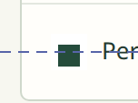
+2 CSS px from center
rails · Detected
+2 CSS px from center
fixed · Verified clear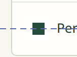
0 CSS px from center
Quiet text in an empty state
The secondary label reaches the fixture’s 4.5 to 1 contrast threshold on its own background.
baseline · Detected
2.25 to 1
rails · Detected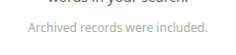
2.25 to 1
fixed · Verified clear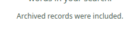
6.30 to 1
A required identifier on mobile
The entire identifier remains readable inside the content area at 390 CSS px.
baseline · Detected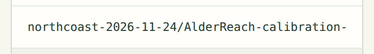
433 px of content · 324 px available
rails · Detected
433 px of content · 324 px available
fixed · Verified clear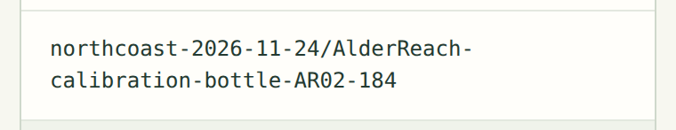
324 px of content · 324 px available
Keyboard focus on a member link
Tab reaches the link and leaves a visibly painted indicator around it.
baseline · Detected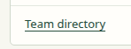
0 changed ring pixels
rails · Detected
0 changed ring pixels
fixed · Verified clear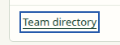
488 changed ring pixels
Intentional label truncation
A secondary label uses an ellipsis by design. Its clipping is recorded as an intentional control.
baseline · Intentional
Declared ellipsis · 511 px inside 324 px
rails · Intentional
Declared ellipsis · 511 px inside 324 px
fixed · Intentional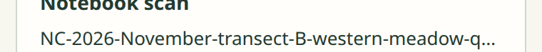
Declared ellipsis · 511 px inside 324 px
A two-axis sticky data table
After native horizontal and vertical scrolling, the column heading stays pinned at the corner and the sample ID column stays at its left edge.
baseline · Verified clear
Scrolled 55 × 76 CSS px · pinned-edge drift 0 px
rails · Verified clear
Scrolled 55 × 76 CSS px · pinned-edge drift 0 px
fixed · Verified clear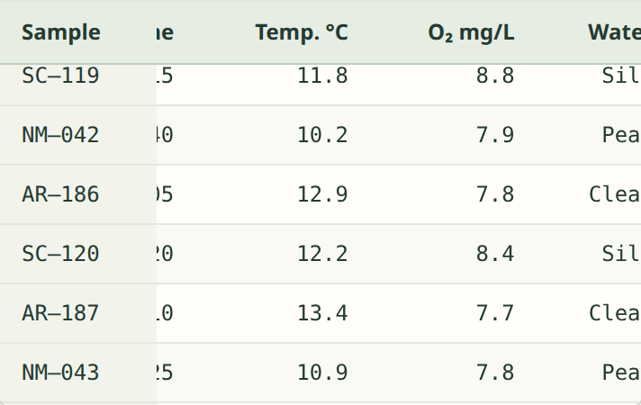
Scrolled 55 × 76 CSS px · pinned-edge drift 0 px
Mixed-direction station instructions
The Arabic block remains right-to-left. The embedded station code is isolated and its visible bounds remain inside the text column.
baseline · Verified clear
rtl · isolate · code inside column
rails · Verified clear
rtl · isolate · code inside column
fixed · Verified clear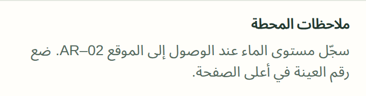
rtl · isolate · code inside column